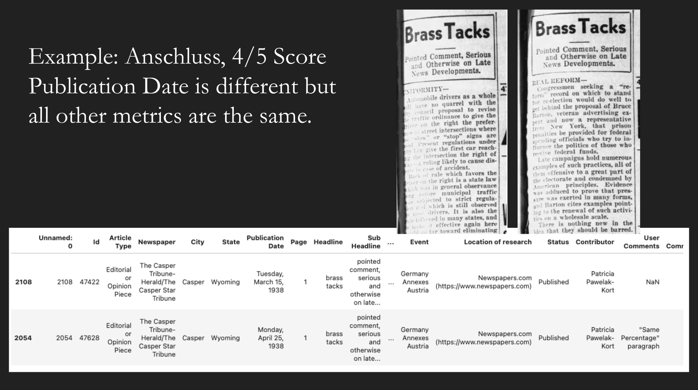
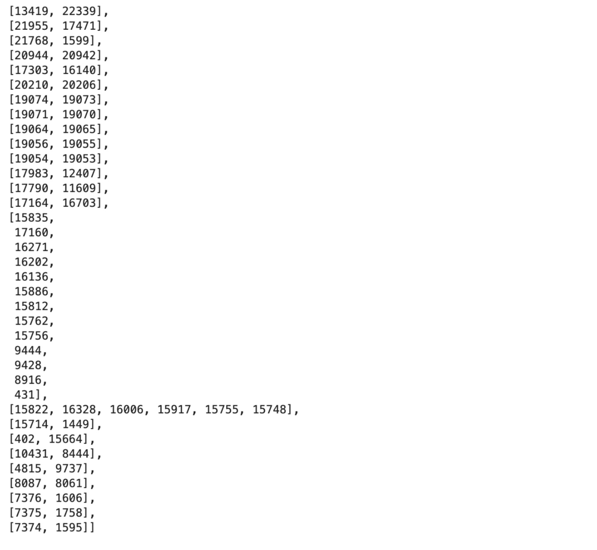
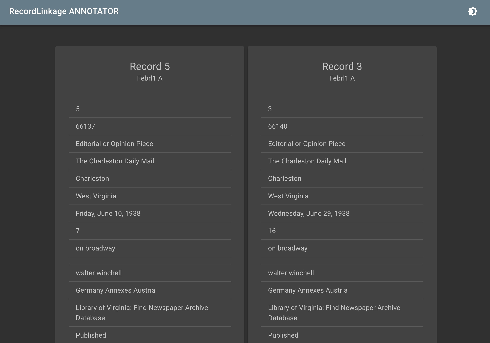

Deduplicating Citizen History Metadata
 The History Unfolded Logo
The History Unfolded Logo
History Unfolded is a citizen history project of the United States Holocaust Memorial Museum in Washington, DC. It relies on the power of crowdsourcing to create a unique dataset of newspaper articles so that we can better understand what news Americans had access to throughout the Holocaust.
In this blog post, we will explore how we can correctly identify duplicate entries in the HUF dataset and what we can do when we find them. The full code for this post can be found in this Google Colab notebook, but is explained in more detail below.
This is a series that is based on my work through the 2022-2023 year in working with exploratory methods and tools on citizen history data. In this article we will be using Python and the Python library recordlinkage.
The Problem
One issue that arises in citizen history and crowdsourcing projects is duplicate entries. This is where users end up for a variety of reasons, submitting the same exact entry. This could be because they do not check to see if the entry already exists in the dataset, or they are otherwise not informed that the entry already exists in the dataset. Particularly for HUF, there are instances when duplicate entries are submitted and subsequently approved because the user may be a student and it is important that their work in finding an entry is recognized. Additionally, the standard for dealing with duplicates for HUF was not always consistent, and some duplicate entries are commented and marked as duplicates but still published. This results in a dataset with duplicate entries for a variety of systemic reasons that may or may not need to be ultimately removed but should be identified and marked.
Record Linkage / Deduplication
In computer science, the process for resolving this issue is often called record linkage or deduplication. This is where we programmatically match pairs of records that we believe to be duplicates. Oftentimes duplicate records will actually be referring to the same entity, but their metadata may be slightly different (ex. “Jane’s third birthday party” vs “3rd birthday party for Jane”). In a naive computational approach like exact string matching, these two pieces of metadata would be identified differently. We want these records to be matched together so that they can correctly be identified to the same entity.
Because the data in HUF can be retrieved as a CSV, we can easily work with the data in Python and Jupyter Notebooks, and with a python library called recordlinkage. This library will allow us to make use of the tools used in standard record linkage and deduplication, so that we can analyze our data.
Step 1: Standardization
def standardize(dfA):
# You can write any of your own standardizing scripts here for the fields in your dataset.
dfA["Headline"] = (dfA["Headline"].str.strip()).str.lower()
dfA["Sub Headline"] = (dfA["Sub Headline"].str.strip()).str.lower()
# This line is to replace all the blank fields with NaNs so that you can avoid errors when running scripts over the data.
dfA.fillna('NaN', inplace=True)
return dfA
The first step we take when we upload our data is to try and standardize it as much as possible. This is so that smaller differences such as capitalization are not registered as large factors for differentiating entities (“Jane F. Doe” should be thought of similarly to “jane f. doe”). Later on, we will discuss how headlines and subheadlines are compared to be duplicates or not, and for that we want them all to be lowercase so that no casing throws off the algorithms we use for comparison. We also remove any trailing or leading whitespaces from the headlines or subheadlines.
Step 2: Blocking
# BLOCKING --- Set up record linkage index and block based on newspaper and publication date
indexer = recordlinkage.Index()
# This is now only recognizing the pairs where Newspaper and Publication Date are identical. You can change these to fit your data fields.
indexer.block(["Newspaper", "Publication Date"])
candidate_links = indexer.index(dfA)
The next step we need to take to find the duplicates is a process called Blocking. This is where we single out the records into one group to be more exhaustively compared. Remember, we want to compare records to find duplicates, and to do that we need to compare each record to each record. With a dataset of around 60,000 articles, that would be 60,000 choose 2 = 1,799,970,000 records to compare. By blocking we drastically reduce the candidate records that we will more deeply inspect.
The actual process of blocking goes as such: we use one or more elements of metadata to ask the recordlinkage function to group by, and it will only give the pairs of records where those elements respectively match. For our case, we use the “Newspaper” and “Publication Date” metadata because for two entries to be duplicates, they almost always will be from the same newspaper, and have the same publication date. Additionally, these are metadata fields which are already standardized in the HUF database, meaning that the format these fields are in will always refer to the same entity.
It is definitely possible that other fields could be used for this blocking method. But in short, we ask the library to do the following: “For my later comparison, give me only the pairs where two article submissions match in their newspaper date, and the day it was published”. By doing this, we reduce our candidate links from 1,799,970,000 records to ~35,000 records.
Step 3: Record Pair Evaluations
# RECORD PAIR EVALUATION --- Compare and Score. You can change these fields and the method of comparison.
compare_cl = recordlinkage.Compare()
compare_cl.string("Headline", "Headline", method="jarowinkler", threshold=0.9, label="Headline")
compare_cl.string("Sub Headline", "Sub Headline", method="jarowinkler", threshold=0.9,
label="Sub Headline", missing_value=1)
compare_cl.exact("State", "State", label="State")
compare_cl.exact("Page", "Page", label="Page")
compare_cl.exact("City", "City", label="City")
features = compare_cl.compute(candidate_links, dfA)
Once we have narrowed down our candidate pairs, we can now proceed with a deeper evaluation of each pair. We start by identifying other fields of the metadata that we would like to be included in the “comparison score”. If any particular field matches between two records, then that pair gets a 1.0 instead of a 0.0. At the end, pairs are put in a sorted list by their overall number of metadata field matches.
In our case, we also want to score the pairs on City, State, and Page. And we are comparing on whether or not they are exact matches. However, for Headline and Sub Headline, we want to create a looser threshold for matching. Because the Headline and Sub Headline at times can be inputted differently, we use a string comparison metric called the Jaro-Winkler Distance to compute a score between 0.0 and 1.0 and if it is above 0.9, then we assign it a 1.0 score, and if not, then 0.0. Note that the Sub Headline field also has a missing_value=1 flag, this is so that record pairs that both don’t have subheadings will be marked as 1 instead of 0.
The image above displays the distribution of candidate pairs on a total score on a 5 point scale for a particular event in HUF. There are 195 candidate pairs where their metadata matches for all five of our specified metadata fields. One might ask, what about the 4/5 pairs? It turns out by simply viewing these candidate pairs that oftentimes these are pairs where there is a broader top headline, but different articles under different subheadings. Or they are articles that always have the same headline and subheading (like a weekly column) but have different article texts for different days, like in the example below. In all cases they are substantively different articles and should not be considered as duplicates.

Step 4: Connected Components
# This is another helper function that transforms the recordlinkage output of connected components to the ids that are duplicates.
def connectedComponents(comps, dfA):
# Turning the Multi Index Components into IDs instead of indexes
ID_comps = []
for comp in comps:
ls = []
for match in comp:
idmatch = dfA.iloc[match[0]]["Id"], dfA.iloc[match[1]]["Id"]
ls.append(idmatch)
mi = pd.MultiIndex.from_tuples(ls)
ID_comps.append(mi)
# Going from Edges to Unique Distinct Nodes in the Connected Components
ID_matches = []
for multi in ID_comps:
seen = []
for item in multi:
if item[0] not in seen:
seen.append(item[0])
if item[1] not in seen:
seen.append(item[1])
ID_matches.append(seen)
return ID_matches
Now that we have the group of 5/5 record pairs which we believe are all duplicates, we want to be able to export that data in a clean way. And the recordlinkage library allows us to do this through its connected components function. While we have been talking about record pairs up until this point, the reality is that the duplicates may actually exist in groups, where three or more records all are about the same article entry, and so each article submission is a duplicate of all other articles in the same group. This forms groups called connected components in mathematical graph theory. We can output the ids of each of these connected components in json format as a list of lists, where each inner list is a group of duplicate entries.
 Groupings of id connected components output as a list of lists
Step 5: Manual Review
 The interface provided by recordlinkage to perform manual reviews
The last step in this proposed process is to do a manual review. While the intent is for the recordlinkage to find all of the duplicates, we have to account for possible errors. There are two types of errors that can occur, false positives and false negatives. False positives are where the tool identifies what it thinks is a duplicate, however in fact upon review, it is not a duplicate. A false negative is a case where an entry is not correctly identified as a duplicate. As it relates to manual review, we can only reasonably consider the false positive cases, meaning that we look through each of the connected components of duplicates to see if each article is in fact a duplicate of each other. Finding the false negatives would involve looking for duplicates over the entirety of the remaining dataset.
Luckily, recordlinkage also provides a tool for this manual review, seen in the image above. This tool’s input is a function output in the recordlinkage library function that you can run. Then you can review all of the proposed matches manually.
Future Work and What To Do With Duplicates
The most simple approach to resolving duplicates is to only use the oldest submission of the connected component of duplicates. Because the ids in HUF are ascending, we can do this easily by taking the lowest number id. However, there are extenuating circumstances about how we resolve duplicates. For one, although the submissions thereafter are indeed duplicates, we want to be able to honor the work that students, users, and citizen historians do to find and upload articles. Oftentimes this can be a gratifying experience to know that they contributed to a dataset and project. A proposed solution to this would be change the contributer field of metadata to include multiple people, which would be all users who have ever found the article.
Second, there may be legitimate differing metadata otherwise that may alter the choice of which entry to use out of all the duplicates. For example, what if a newer submission contains a better image? Or a previously unknown piece of metadata or context that enriches the experience of the particular entry? These examples are likely too diverse to be have a catch-all rule that can be run computationally. It is still yet to be decided how these duplicates should be resolved, and how they should exist in the dataset as the project moves forward.
Conclusion
In this post, we were able to identify duplicates in a csv dataset using the library recordlinkage. We explained the meaning of deduplication and record linkage, why some duplicates exist in the HUF dataset, and how we can reasonably go about identifying them computationally. We broke down different steps in Python of how we can standardize, block, and create record pair evaluations to identify duplicates. We then discussed the different ways we can resolve duplicates while honoring the work of the citizen historians who found the articles.